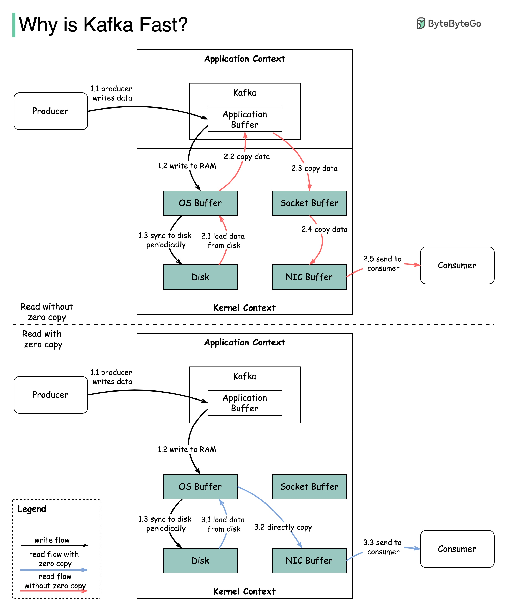

There are many design decisions that contributed to Kafka’s
performance. In this post, we’ll focus on two. We think these two
carried the most weight.
Sequential I/O
The first one is Kafka’s reliance on Sequential I/O.
Zero Copy
The second design choice that gives Kafka its performance advantage is
its focus on efficiency: zero copy principle.
The diagram above illustrates how the data is transmitted between
producer and consumer, and what zero-copy means.
- Step 1.1 - 1.3: Producer writes data to the disk
-
Step 2: Consumer reads data without zero-copy
- 2.1: The data is loaded from disk to OS cache
- 2.2 The data is copied from OS cache to Kafka application
-
2.3 Kafka application copies the data into the socket buffer
- 2.4 The data is copied from socket buffer to network card
- 2.5 The network card sends data out to the consumer
-
Step 3: Consumer reads data with zero-copy
- 3.1: The data is loaded from disk to OS cache
-
3.2 OS cache directly copies the data to the network card via
sendfile() command
- 3.3 The network card sends data out to the consumer
Zero copy is a shortcut to save multiple data copies between the
application context and kernel context.